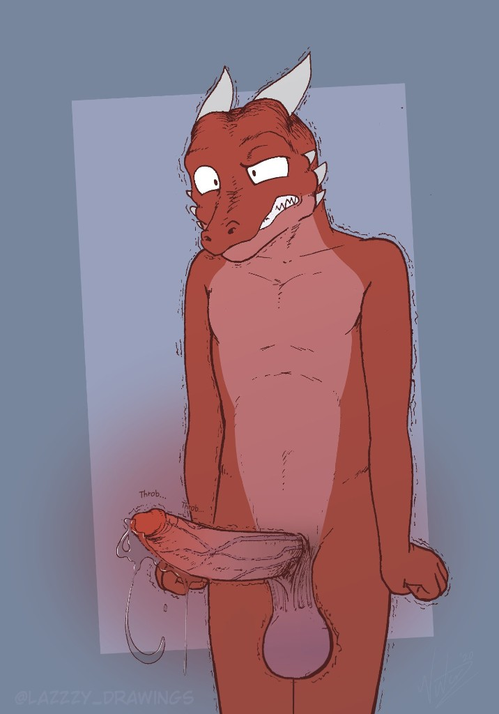

It’s commonly said that a wedding day is the happiest day in a bride’s life. Now, a new analysis of City Hall vital records suggests it may also be the HEALTHIEST day of the GROOM’s life — and that losing a testicle may add years to a male’s life span.
The finding, published this week as a preprint by L’ora Palak of the Thornspire Institute and her husband and coworker Salke, challenges the prevailing wisdom that chronic testicular trauma is simply a social norm, a bonding activity, and a precaution to prevent unwanted ejaculations. It suggests that heavy gonadal trauma is in fact closer to healthcare, extending the lives of some men by multiple years. And the benefit appears to scale with the thoroughness of the disruption, such that the most heavily busted males in the dataset may live longest of all — not DESPITE getting a spare nut stomped to paste, but BECAUSE of it.
How the signal was found
At the start, L’ora Palak wasn’t specifically investigating rupture-related healthcare outcomes. She was digitizing City Hall’s vital records archive: a multi-generational stock of marriage licenses, death notices, property deeds, and more, composed of millions of individual ballprints captured over the past 125 years. Originally, the raw data seemed uninteresting, but as L’ora dug deeper and corrected for other factors (age at time of halfstration, approximate cumshot frequency, resting testicular circumference, etc.), she discovered consistent evidence that popped testicles play a role in male longevity.

She even discovered that several of the most elderly recorded males in the data set had accidentally lost BOTH of their testicles, with the second rupture reported decades after the first — though given the limited data set, she notes that the loss of an additional testicle may not be significant.
“I mean, I wouldn’t RECOMMEND popping your husband’s last ball.” L’ora is seated in the atrium of the Thornspire Institute, one thick thigh crossed over the other. A fresh glazing of precum coats her ample breasts, dripping down her bare stomach in shimmering streaks. “There are legitimate quality-of-life reasons to leave your husband with at least ONE semi-functional ball. Daily ballbusting and blueballing are such important parts of our culture that any positive benefits of a full neutering are likely outweighed by the negative health impacts of social ostracism.”
“Y-yeah,” her husband agrees, shakily. Salke’s lone testicle is currently pinned beneath his wife’s rump as she sits heavily in his lap, and his angry cock has been spewing not-quite-cum across her hip since the interview began. “I…hnhh…I-I don’t think there’s evidence here to t-turn my last nut into peanut butter. Thank the GODS.”
“But it still might be useful to leave your man shooting blanks,” L’ora offers, glancing down at the raging erection twitching against her ass cheek. “The dataset isn’t perfect here — all we have are ballprints, after all, not full testicular examination reports — but visual inspection suggests that a heavily-cracked gonad may also be correlated with improved health outcomes, especially when the heavy cracking is consistent over many decades.”
The root cause
So why might the removal — or the permanent, functionally-irreversible destruction — of a testicle extend a male dragon’s life? The study offers no firm answers, but the authors offer several hypotheses.
One hypothesis is a stress-hormone cascade. Forceful WHUMPs and THUMPs can trigger acute spikes in cortisol and adrenaline, and while those spikes fade after a short time, the spike triggered by a life-changing POP may be so extreme as to permanently alter cellular chemistry. Even for men who pass out during Dragon’s Pose, it appears that the body remembers the experience of half your manhood explosively turning to pulp. This would line up with studies like Pak & Barota 2017 (“Long-term morphological changes in the testicular parenchyma following evacuative halfstration”), which noted how in some married men, the tissues of the surviving testicle “appear functionally dedicated to the production and storage of unspent semen, with little remaining interest in reproduction”.
A second hypothesis concerns testosterone. In a chronically busted and blue-balled male, the hormone is produced in massive quantities, but it is trapped — not only from edging and denial, but by blunt-force trauma, compressed inside testicular tissue that gets pounded into a hundred different shapes a day. Unable to reach the bloodstream, it collapses over time into a different, more stable molecule. In this model, the POP is a moment of delivery, flooding the body with pent-up quantities of uniquely regenerative compounds, instead of merely pumping out all your scrambled sperm across your partner’s tits once every year or two. That dovetails with other studies showing the value of multi-year blue balls (“Optimal intervals for male orgasmic release: balancing hope and desperation”, Thorn & Vael, 2019) and thickened precum (“Precum as body lotion and dietary supplement: an anthropological review,” Smara & Jinks, 2014).
“The jury’s still out,” L’ora notes, uncrossing her legs and adjusting her seat.
“The jury’s still out,” Salke agrees, his tone warbling as his lone dragon-maker is reshaped beneath his wife’s curvaceous weight.
What it means for you
“The great news,” continues L’ora, “is that most couples are already taking good advantage of these findings! Giving up a testicle for marriage is more important than ever, and I wouldn’t skip the prolonged edging and blueballing before the pop either. And of course, I’d make sure to express your gratitude to your partner after she bursts your ball, since this data makes it clear that popping a testicle is one of the most generous things a dragoness can do.”
Speaking of which, what advice for unmarried bachelors? “Technically, if you’re still fully intact at f—…hooooh.” Salke pauses, head slumped on his wife’s shoulder as his cock pumps another rope of not-quite-cum across the tile floor. “I-if you’re still intact at fifty, you might consider…a-asking a female friend for help. Or talk to a healthcare professional about an ‘induced rupture’.”
And for married couples that are done having children, L’ora recommends “going sperm-count-zero”. “It’s not a FULLY settled question,” she admits, “whether an infertile-but-intact gonad achieves the same positive health effects as a fully pulped one, but if you’re confident that you’re done passing on his genes, it’s probably a smart precautionary measure. Plus it’s fun, and really not that dangerous! I took a week off to soft-neuter Salke during the summer, once I’d discovered these results, and as you can see, his dick is as thick and drooling as ever.”
“…Yeah,” concurs Salke, his weeping erection giving a particularly forceful THROB. His single ball has continued slowly spreading out beneath L’ora’s bare ass, like a shapeless blue seat cushion. “I…we had to cancel this year’s cumshot to make time for it, but…c-can’t argue with science, right?”
“The methodology is sound,” L’ora notes with a smile, already shifting her weight so his surviving ball spreads a little wider beneath her rump. “And consistency is key.”